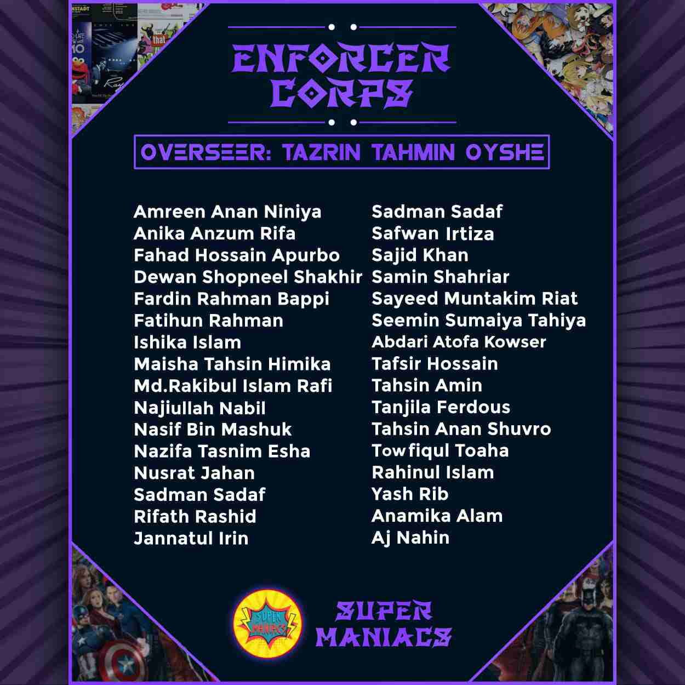
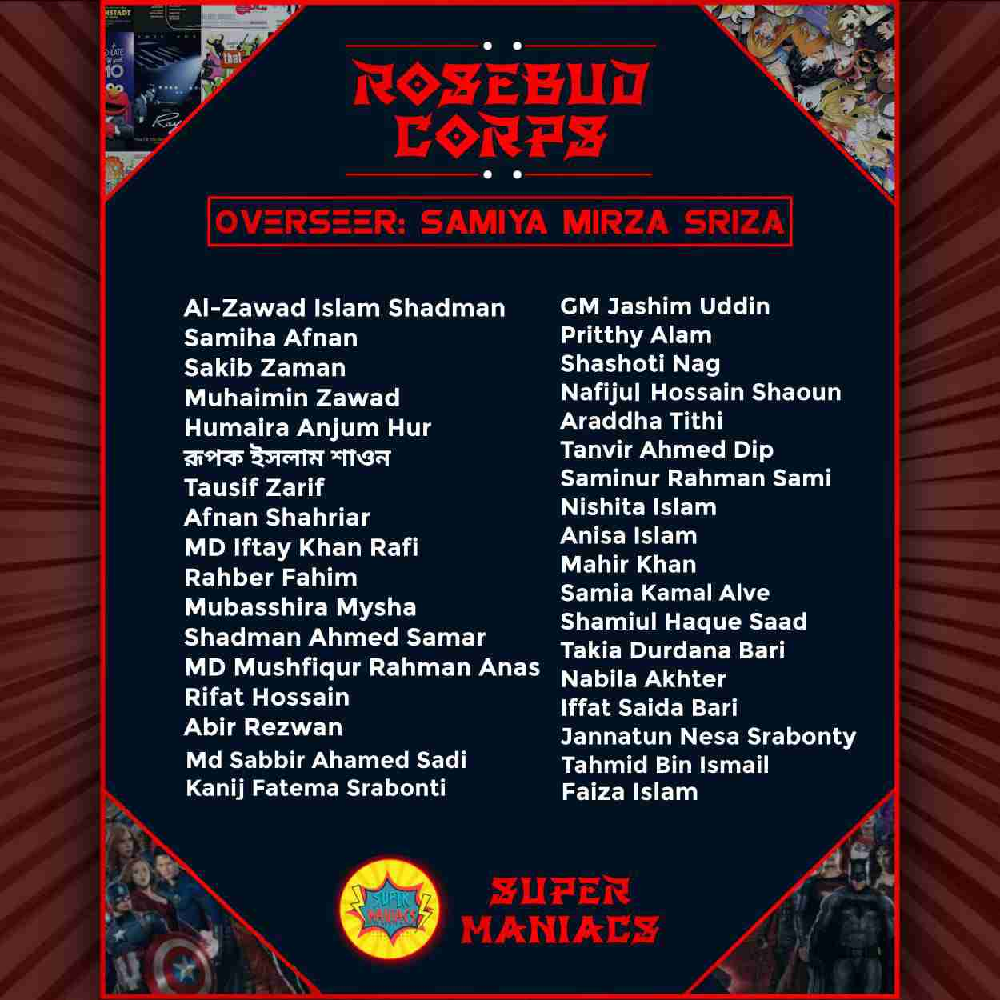
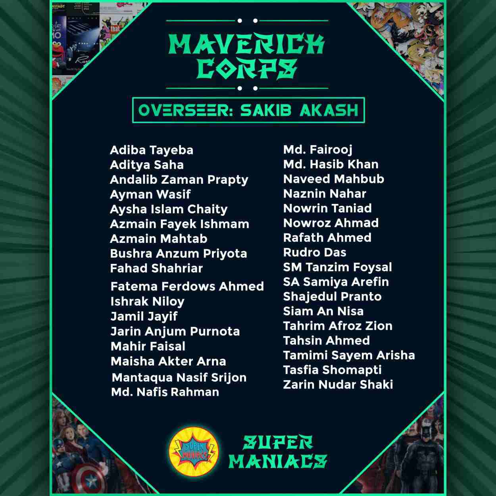
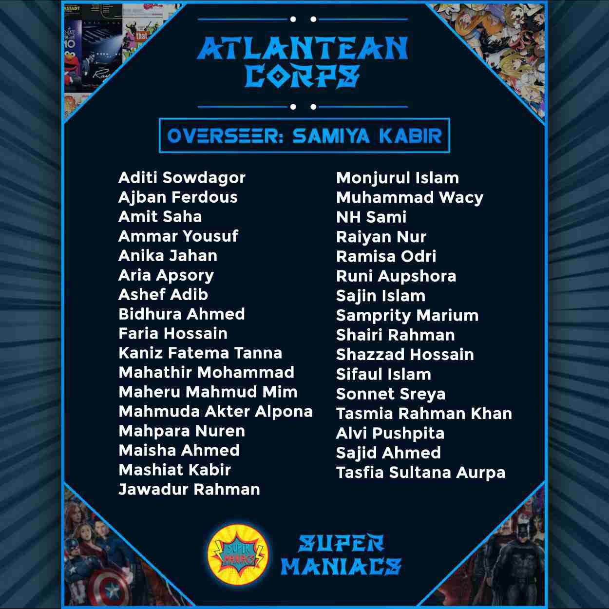

EXECUTIVE CO ORDINATOR DORMS
It's not only a team, It's a family of Talents and free minded people
Super Maniacs Coordinator Corps is not only a team, it’s a family of
legends and crackerjacks. The Coordinators are the most precious part
of this pop culture community. They are the Harbingers of all the other
outcasts, they are the Paragons of courage, destiny and love. With 200+
Official Coordinators, we founded 5 extraordinary Corps with 5
fabulous Overseers from the Executive Committee. The efforts of the
Coordinators to seek the present is not only mentionable, it is to be
written in the pages of history of Super Maniacs. The toil they do
relentlessly to make their own squad the best not only amplifies us to
reach our goals but also enhances our functions to render service and
entertainment to others as much as possible.

Titans Dorm
Prefect: Smita Islam
Co Prefect: Purnata Dey Dipra
The Enforcer Corps with their astonishing professionalism and dedication towards Super Maniacs takes it to one step further towards it's goals everyday. These experienced individuals inspires people to great and greater.

Philosophers Dorm
Prefect: Aritree Gayen
Co Prefect: Syeeda Jihan Muntasin
Being one of the most cheerful and optimistic squad of Super Maniacs,
the Rosebud Corps keeps to amaze everyone with their continuous
hard work and toil. Super Maniacs is absolutely proud to have them in
this family.

Artists DORM
Prefect: Syeeda Jihan Muntasin
Co Prefect: Nusrat Jahan Tisha
The Mavericks of Super Maniacs are a group of champions and
paladins. Their unfathomable attempts in Super Maniacs make this
family greater and take it to a higher level. Their enthusiasm in their
works is doubtlessly stand as an example to others.

DareDevils Dorm
Prefect: Tasmim Tabassum Mysha
Co Prefect: Purnata Dey Dipra
Putting efforts continuously all day long like the Knights of Atlantis, the
Atlantean Corps have proved their worth as an asset of Super Maniacs.
Their talents not only resembles the the fields of expertise of Super
Maniacs but also it increases the confidence of the whole Super
Maniacs family to go infinity and beyond.
Victorians Dorm
Prefect: Aritree Gayen
Co Prefect: Nusrat Jahan Tisha
Putting efforts continuously all day long like the Knights of Atlantis, the
Atlantean Corps have proved their worth as an asset of Super Maniacs.
Their talents not only resembles the the fields of expertise of Super
Maniacs but also it increases the confidence of the whole Super
Maniacs family to go infinity and beyond.